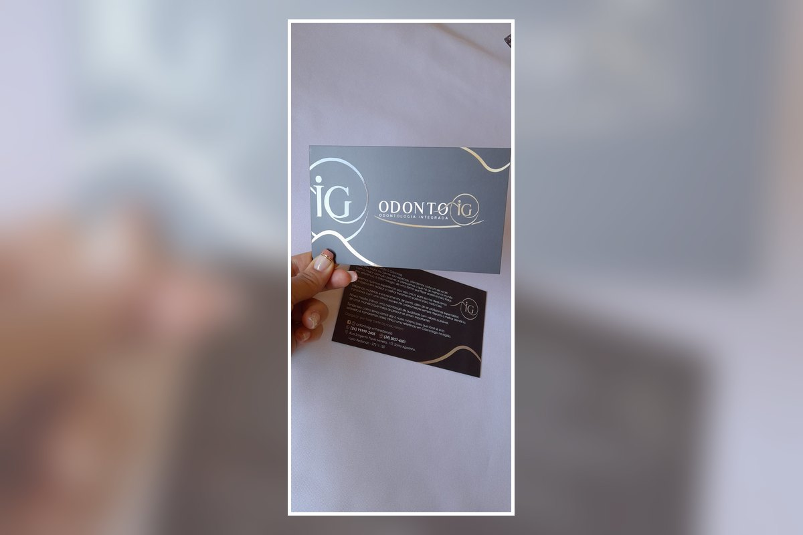

Apresentação da empresa
Ideal para clínicas, lojas, escritórios, profissionais e marcas que desejam apresentar seus serviços com mais cuidado.
Apresente sua empresa de forma profissional com um cartão institucional personalizado. Ele pode reunir mensagem de boas-vindas, orientações, contatos, redes sociais, QR Code e outras informações importantes para seus clientes.

O cartão institucional ajuda sua empresa a entregar informações importantes de forma organizada, reforçando identidade visual, confiança e relacionamento com o cliente.
Ideal para clínicas, lojas, escritórios, profissionais e marcas que desejam apresentar seus serviços com mais cuidado.
Pode incluir contatos, orientações, redes sociais, QR Code, mensagens e instruções conforme a necessidade.
Arte, formato, papel, quantidade e acabamento são definidos conforme o projeto e a identidade da sua marca.
Envie sua arte, referência ou ideia pelo WhatsApp. Confirmamos formato, quantidade, papel, acabamento, prazo e valor antes da produção.
Envie sua referência e solicite um orçamento personalizado.